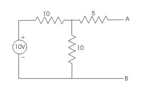
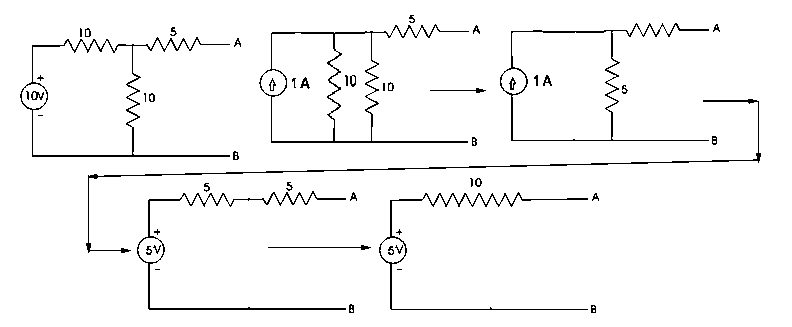
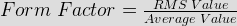
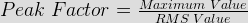

- For the circuit given in the figure, the Thevenin voltage and resistance as seen at AB are represented by
 - Form factor is defined as ratio of

- Peak factor is defined as ratio of

- At resonance
Resonance is occurs at when inductive, capacitive reactance both are same i.e. , circuit is having only resistive components.
- A series R-L-C circuit has R=50 Ω, L=100 μH and C = 1 μF. The lower half power frequency of the circuit is
Ω1.L − 1 = − R Ω1.C 2πf1X100X10 − 6 − 1 = − 50 ⇒ f1 = 3.055 KHz 2πf1.X1X10 − 6 - The period of the function cosπ/4(t-1) is
Here 2π / T = π / 4 ⇒ T = 8 Second.
- A T-section lowpass filter has series inductor 80 mH and shunt capacitance 0.022 μF. What is the cutoff frequency?
L = 80 mH, C = 0.022 μF , fc (cutoff frequency) = 1 /π√(LC) = 1 / π√(80 × 10 − 3) × (0.022 × 10 − 6) = 7.58 KHz.
- In a constant-k high pass filter having cutoff frequency of 12 kHz. Find out phase constant at 24 kHz?
β ( phase constant ) = 2sin − 1(fc/f) = 2sin − 1(12 × 103/24 × 103) = 60°.
- In Constant K high- pass filter having cutoff frequency of 12 KHz. Find out attenuation at 4 KHz?
α ( attenuation ) = 2cosh − 1(fc/f) = 2cosh − 1(12 × 103/4 × 103) = 3.525 Neper.
- Find out the series arm capacitance &s; shunt arm inductor in a constant K-high pass filter, when impedance R0 = 600 Ω &s; cut off frequency = 4 Khz (Π - sec)
C = 1 / 4πR0fc = 1 / (4π600 × 4000) = 0.033 μF and L = R0/ 4πfc = 600 / (4π × 4000) = 11.937 mH.
- An RLC circuit has a resonance frequency of 160 kHz and a Q-factor of 100. Its band width is
Bandwidth, Bω = f0/Q
Where f0 = Resonant frequency.
Q = Quality factor.
Bω = 160/100 = 1.6 kHz. - A circuit which has ω0 = 106 rad/sec (ω0 = resonant frequency) C = 10 pf and Q = 100, must have a resistance of ___________kΩ.
Q= Xc/R ⇒ R= 1/ (ω0CQ) = 1 / (106 × 10 × 10-12 × 100) = 100 × 103 Ω .
- A certain ac circuit has resistance of 10 ohm and impendence of 20 ohm. The phase angle of voltage and current of the circuit is
cosφ = R/Z = 10/20.
φ = cos-1(1/2)= 60°. - The time constant of an RL circuit is 1 second and its inductor is 8 H, the resistance of the coil is _____ ohms.
Time constant of RL circuit = L/R
T = L/R
⇒ 1 = 8/R
⇒ R = 8 ohm. - The period of the function cos π/4(t-1) is
Here 2π/T=π/4 or,T=8 Second.
- Clamping circuits are one which inserts
Clamping circuits / dc restorer are one which inserts dc components. These circuits are used in television amplifiers. A clamping circuit (also known as a clamper) will bind the upper or lower extreme of a waveform to a fixed DC voltage level. Clamp circuits are categorized by their operation; negative or positive, and biased or unbiased.
- To a highly inductive circuit , a small capacitance is added in series . The angle between voltage and electric current will
The angle between voltage and electric current decreases when capacitance is added in series to a highly inductive circuit.
- Value of electric current at resonance in a series RLC circuit is affected by the value of
In series RLC circuit value of electric current is always affected by inductor of the circuit.
- Superposition theorem is not applicable to networks having
Superposition is only applicable to networks having linear elements.
- A network is linear if
A linear network obeys both the principle of superposition and homogeneity.
Design with  by SARU TECH
by SARU TECH
www.sarutech.com
Content Credited to electrical4u.com
Online Electrical Engineering Study Site